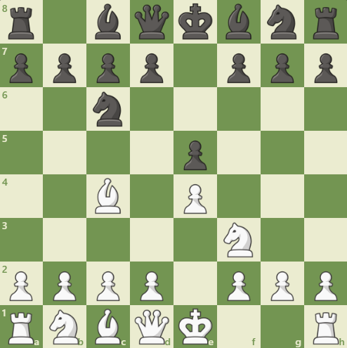
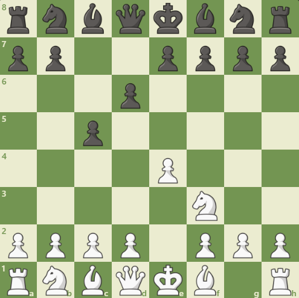
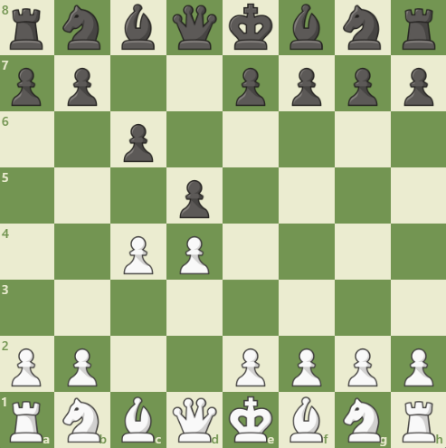

Inicio de Partida
En el inicio del juego hay varias cosas importantes:
- Ganar el centro para tener mas espacio para desarrollar tus piezas
- Desarrollar tus piezas para que esten activas en el tablero
- Seguridad del rey para que no te den jaque mate
Para lograr estos puntos tan importantes se han estudiado cuales son las mejores jugadas iniciales para el inicio de la partida. Son llamadas aperturas.
Aperturas
Hay una gran cantidad de aperturas con una gran cantidad de variantes, pero aqui te digo cuales son las mas faciles de entender.
- Apertura italiana (blancas): esta comienza con 1.e4, e5 2.Cf3, Cc6 3.Ac4. Su objetivo es obtener el centro de una forma rapida con el peon y el caballo, luego poner el alfil en una buena casilla y preparar el enroque.

- Defensa Siciliana (negras): 1.e4, c5. Normalmente se juega 2.Cf3, d6. Esta apertura usualmente la juegan jugadores agresivos. El punto del negro es cambiar un peon de alfil por un peon central.

- Defensa Eslava (negras): 1.d4, d5 2.c4 c6. Es una defensa solida pero que no te quita opciones de ataque. Es una variente fuerte contra el gambito de dama. Se debe desarrollar el alfil de casillas blancas (Ac8).
